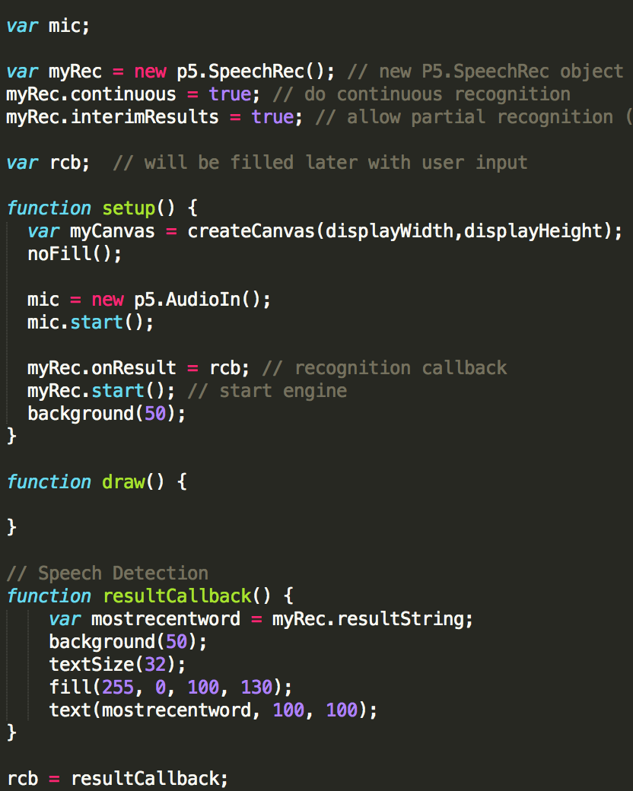

myRec.continuous = true;
myRec.interimResults = true;
var rcb;
3.In setup function, input microphone volume and start() mic along with create canvas
var myCanvas = createCanvas(displayWidth,displayHeight);
noFill();
mic = new p5.AudioIn();
mic.start();
3.Recognition callback and start() engine
myRec.onResult = rcb;
myRec.start();
3.Set a variable mostrecentword as the strong of myRec
var mostrecentword = myRec.resultString;
3.Display mostrecentword in screen
text(mostrecentword, 100, 100);
textSize(32);
fill(255, 0, 100, 130);
3.Call rcb
rcb = resultCallback;

See How it is like? Say something!